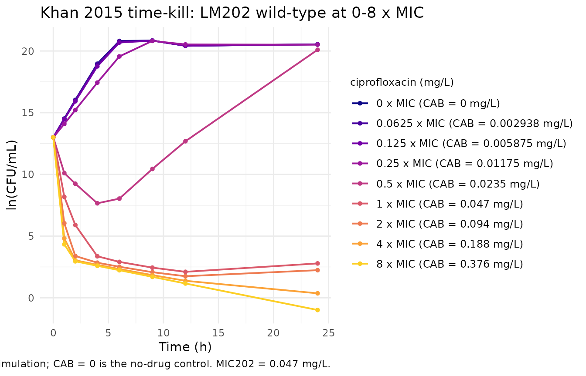
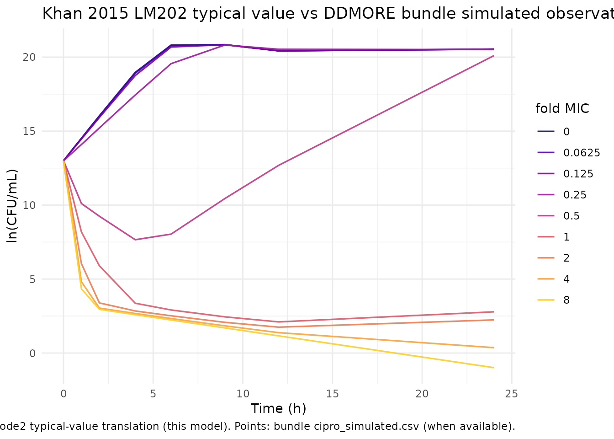

Khan_2015_ciprofloxacin
Source:vignettes/articles/Khan_2015_ciprofloxacin.Rmd
Khan_2015_ciprofloxacin.RmdModel and source
- Citation: Khan DD, Lagerback P, Cao S, Lustig U, Nielsen EI, Cars O, Hughes D, Andersson DI, Friberg LE. (2015). A mechanism-based pharmacokinetic/pharmacodynamic model allows prediction of antibiotic killing from MIC values for WT and mutants. J Antimicrob Chemother 70(11):3051-3060. doi:10.1093/jac/dkv233. DDMORE Foundation Model Repository: DDMODEL00000225.
- Description: Mechanism-based six-compartment PK/PD model for ciprofloxacin against Escherichia coli K-12 wild-type and quinolone-resistant single-step mutants in static in vitro time-kill experiments (Khan et al. 2015 J Antimicrob Chemother). Two co-existing bacterial subpopulations (susceptible-growing, plus a small pre-existing less-susceptible subpopulation seeded at MUT*1e-6 of the inoculum) each carry growing, resting, and drug-induced non-colony-forming states; drug effect is a Hill-Emax term on bacterial kill with strain-specific EC50 (LM202 estimated; LM347, LM378, LM534, LM625, LM693, LM707 fixed at the published per-strain values), a separate EC502 for the resistant subpopulation, density-dependent active->resting flux, and a model-time gate that switches off the active->non-colony-forming transition after THETA(19) hours.
- Article: https://doi.org/10.1093/jac/dkv233
- DDMORE Foundation Model Repository entry: DDMODEL00000225
This model was extracted from the DDMORE Foundation Model Repository
bundle for DDMODEL00000225 (scraped to
dpastoor/ddmore_scraping/225/). The bundle contains:
-
executeable_cipro_pkpd.mod– the NONMEM control stream (ADVAN13, 6 compartments, 19 thetas, 1 omega FIX, 5 sigmas with one BLOCK(1) plus three BLOCK(1) SAME). -
executeable_cipro.xml– MDL XML render of the same model. -
output_simulated.lst– NONMEM listing from a refit oncipro_simulated.csv. The bundle does not ship anOutput_real_*.lstfrom a re-fit on the original real-datacipro202.csv/cipro378.csvdatasets. The simulated-refit reportsMINIMIZATION SUCCESSFUL HOWEVER, PROBLEMS OCCURRED WITH THE MINIMIZATION(the standard “rounding errors but converged” status with NSIG = 5 reached). -
cipro_simulated.csv– 9 in vitro tubes (one per CAB level for STR = 202) with 4 sample-position replicates per observation time; 207 rows, 148 observations. -
cipro202.csv,cipro378.csv– the real-data datasets and theircipro202_VPC.mdl/cipro378_VPC.mdlcompanions. -
Model_Accommodations.txt– notes that the MDL rendition dropsL2,MTIME,B2, andM3(“not supported in MDL”). The NONMEM.modretains all four of those mechanisms. -
DDMODEL00000225.rdf– RDF metadata (model-field-purpose: pkpd_0001024,model-implementation-source-discrepancies-freetext = "M3, B2, MTIME and L2 not included in mdl file."). -
HO_Bacteria_PKPD _script.r,Command_target.txt,225.json– helper scripts and scraper metadata.
The packaged model uses the .mod
$THETA initial values as its parameter values, not
the simulated-refit lst final estimates. That choice was confirmed by
the operator (sidecar 025 q1 = mod_initials) on these
grounds: the .mod initials appear to be the
publication-derived point values that seeded the bundle’s simulated
dataset – output_simulated.lst round-trip-recovers them
within ~3 % for every theta – so the .mod initials are the
closest available proxy for Khan 2015 Table 2 / Table 3, while no
Output_real_*.lst is available. The
output_simulated.lst final estimates differ materially only
for SIGMA(1) (2.42 -> 1.78); the .mod
initial 2.41597 is what the model file uses for addSd.
The Khan et al. 2015 publication itself (J Antimicrob Chemother
70(11):3051-3060) is paywalled and is not on disk in this worktree; PMID
26349518 has no PMC full-text mirror. A side-by-side comparison against
the publication’s per-strain MIC table or per-tube time-kill figure is
therefore out of scope here. Validation in this vignette is the F.3
mechanistic-sanity check from the extraction skill: the typical-value
bacterial-count trajectory is qualitatively consistent with a 24-hour
ciprofloxacin time-kill experiment on Escherichia coli
LM202 wild-type at concentrations spanning 0-8 x MIC.
Population
Khan 2015 is a static in vitro time-kill study, not a clinical
population-PK study: each tube is a single E. coli strain
in Mueller-Hinton broth at a fixed ciprofloxacin concentration, with
serial colony counts at 0, 1, 2, 4, 6, 9, 12, and 24 hours. The seven
strains used are E. coli K-12 MG1655 (LM202 wild-type) and
six gyrA / gyrB / parC / parE single-step mutants raised on the same
MG1655 background (LM347, LM378, LM534, LM625, LM693, LM707). Per-strain
MICs span four orders of magnitude (LM202 wild-type 0.047 mg/L ->
LM707 highly resistant 92 mg/L), with the wild-type EC50 estimated and
the six mutant EC50s fixed at the per-strain measured values in the
published Table.
Because the experimental “subjects” are tubes rather than human
participants, the model’s population metadata fields for
n_subjects, age_range,
weight_range, and sex_female_pct are
intentionally NA. The disease_state,
dose_range, and notes fields document the in
vitro experimental design instead.
The DDMORE bundle’s cipro_simulated.csv ships only STR =
202 (wild-type) tubes spanning a 9-point CAB grid (0, 0.0029, 0.0059,
0.0118, 0.0235, 0.047, 0.094, 0.188, 0.376 mg/L; equivalent to 0-8 x
wild-type MIC). The validation cohort below mirrors that covariate
structure exactly.
Source trace
Per-parameter origin (also recorded as in-file comments next to each
ini() entry of
inst/modeldb/ddmore/Khan_2015_ciprofloxacin.R):
| Equation / parameter | Value | Source location |
|---|---|---|
lkgs |
log(1.70) |
executeable_cipro_pkpd.mod
$THETA(1) = (1, 1.70) (init 1.70) |
lemax |
log(5.24) |
.mod $THETA(2) = (0, 5.24)
|
lec50_347 |
fixed(log(0.037)) |
.mod $THETA(3) = (0, 0.037) FIX
|
lec50_202 |
log(0.057) |
.mod $THETA(4) = (0, 0.057) (only LM202
was estimated; the LM202 cell line is wild-type and the only strain
shipped in cipro_simulated.csv) |
lec50_378 |
fixed(log(0.65)) |
.mod $THETA(5) = (0, 0.65) FIX
|
lec50_534 |
fixed(log(0.30)) |
.mod $THETA(6) = (0, 0.30) FIX
|
lec50_625 |
fixed(log(1.0)) |
.mod $THETA(7) = (0, 1.0) FIX
|
lec50_693 |
fixed(log(31.0)) |
.mod $THETA(8) = (0, 31) FIX
|
lec50_707 |
fixed(log(92.0)) |
.mod $THETA(9) = (0, 92) FIX
|
lgam |
log(1.98) |
.mod $THETA(10) = (0.5, 1.98)
|
lpc_raw |
log(0.0186) |
.mod $THETA(11) = (0, 0.0186); multiplied
by 1e-7 in model()
|
lkgs2 |
log(0.344) |
.mod $THETA(12) = (0.18, 0.344)
|
lec502 |
log(1.25) |
.mod $THETA(13) = (0, 1.25)
|
lmut_raw |
log(0.81) |
.mod $THETA(14) = (0, 0.81); multiplied by
1e-6 in model()
|
lksnc_max |
log(5.83) |
.mod $THETA(15) = (0, 5.83)
|
lknc_factor |
log(0.17) |
.mod $THETA(16) = (0, 0.17)
|
lgam_nc |
fixed(log(20)) |
.mod $THETA(17) = (0, 20) FIX
|
ltr50 |
log(0.24) |
.mod $THETA(18) = (0, 0.24)
|
ltmtime |
log(5.3158) |
.mod $THETA(19) = (2, 5.3158)
|
addSd |
1.5544 = sqrt(2.41597) |
.mod $SIGMA 2.41597 (across-tube
residual; per-position SAME blocks dropped – see Errata) |
kk = 0.179 constant in model()
|
n/a |
.mod $PK line 32 – hardcoded death rate,
not estimated |
Strain cascade (STR == X) * exp(lec50_X) sum |
n/a |
.mod $PK lines 39-45 IF(STR.EQ.X)
cascade |
ec50 selection by STR
|
n/a | dataset column STR in {347, 202, 378, 534, 625, 693,
707} |
drugs = emax * CAB^gam / (ec50^gam + CAB^gam) |
n/a |
.mod $DES line 113 (EMAX equation,
sensitive subpopulation) |
drugs2 = emax * CAB^gam / (ec502^gam + CAB^gam) |
n/a |
.mod $DES line 114 (EMAX equation,
pre-existing resistant subpop) |
ksnc_1 = ksnc_max * (CAB/ec50)^gam_nc / ((CAB/ec50)^gam_nc + tr50^gam_nc) |
n/a |
.mod $PK line 82 (drug-induced active
-> NC transition) |
ksnc_2 analogous with ec502
|
n/a |
.mod $PK line 83 |
knc_s_1 = knc_factor * ec50 / (CAB + 1e-10) |
n/a |
.mod $PK line 85 (NC -> active
back-reaction) |
knc_s_2 = knc_factor * ec502 / (CAB + 1e-10) |
n/a |
.mod $PK line 86 |
flag = 1.0 * (t < tmtime) |
n/a |
.mod $PK lines 90-91 + $DES
line 98 (MTIME(2) = THETA(19);
FLAG = MPAST(1) - MPAST(2)) |
sr = pc * sum(bact_*) |
n/a |
.mod $DES line 102 (density-dependent
active -> resting flux) |
bact_s(0) = sbase * (1 - mut*1e-6) |
n/a |
.mod $PK line 72
(A_0(1) = SBASE * (1 - MUT*0.000001)) |
bact_spe(0) = sbase * mut * 1e-6 |
n/a |
.mod $PK line 74
(A_0(3) = MUT*0.000001*SBASE) |
| 6-compartment ODE block | n/a |
.mod $DES lines 117-123 (line-for-line
image; see model file) |
lnBact = log((bact_s + bact_r + bact_spe + bact_rpe) + 1e-8) |
n/a |
.mod $ERROR lines 130-132
(ATOT = A1+A2+A3+A5;
IPRED = LOG(ATOT + 1e-8)) |
Virtual cohort
set.seed(20260506L)
# Mirror cipro_simulated.csv: STR = 202 (LM202 wild-type, MIC = 0.047
# mg/L) at 9 CAB levels (0..8 x MIC). Time grid matches the
# experiment's 24-hour observation window.
mic202 <- 0.047
cab_grid <- mic202 * c(0, 0.0625, 0.125, 0.25, 0.5, 1, 2, 4, 8)
obs_times <- c(0, 1, 2, 4, 6, 9, 12, 24)
base_log <- 13 # ln(CFU/mL); the .mod default for a typical inoculum
events <- expand.grid(
cab_level = seq_along(cab_grid),
time = obs_times,
KEEP.OUT.ATTRS = FALSE,
stringsAsFactors = FALSE
) |>
mutate(
id = cab_level,
CAB = cab_grid[cab_level],
STR = 202L,
BASE = base_log,
evid = 0L,
amt = 0,
fold_mic = CAB / mic202,
treatment = sprintf("%.4g x MIC (CAB = %.4g mg/L)", fold_mic, CAB)
) |>
arrange(id, time)
stopifnot(!anyDuplicated(unique(events[, c("id", "time", "evid")])))Simulation
mod <- rxode2::rxode2(readModelDb("Khan_2015_ciprofloxacin"))
# Typical-value (no IIV) trajectory: rxode2::zeroRe() zeros out the
# residual SD (the only random effect in this single-tube model).
mod_typical <- mod |> rxode2::zeroRe()
#> Warning: No omega parameters in the model
sim_typical <- rxode2::rxSolve(
mod_typical,
events = events,
keep = c("CAB", "STR", "BASE", "fold_mic", "treatment")
) |>
as.data.frame()
#> Warning: multi-subject simulation without without 'omega'Replicate published time-kill curves
The figure below replicates the qualitative shape of a Khan 2015 LM202 wild-type time-kill panel: at sub-MIC concentrations the bacterial count grows to a stationary plateau (capped by the density-dependent active -> resting flux); at 1 x MIC the count collapses sharply through ~24 hours; at 2-8 x MIC the count drops to near-eradication levels within the first 9 hours and stays low. The published Khan 2015 figures are not on disk for a side-by-side panel-by-panel comparison.
pal <- scales::viridis_pal(option = "C", end = 0.9)(length(unique(sim_typical$treatment)))
treatment_levels <- unique(events$treatment)
ggplot(sim_typical, aes(time, lnBact, colour = factor(treatment, levels = treatment_levels))) +
geom_line(linewidth = 0.7) +
geom_point(size = 1.2) +
scale_colour_manual(values = pal, name = "ciprofloxacin (mg/L)") +
labs(
x = "Time (h)",
y = "ln(CFU/mL)",
title = "Khan 2015 time-kill: LM202 wild-type at 0-8 x MIC",
caption = "Typical-value simulation; CAB = 0 is the no-drug control. MIC202 = 0.047 mg/L."
) +
theme_minimal(base_size = 11) +
theme(legend.position = "right",
legend.text = element_text(size = 9),
legend.title = element_text(size = 9))
Mechanistic sanity checks
Three F.3 mechanistic-sanity checks for this PD model.
1 – No-drug control reproduces sigmoidal growth
In the absence of drug, the bacterial count must rise from the baseline inoculum and plateau (the density-dependent active -> resting flux is the only thing limiting unbounded growth).
no_drug <- subset(sim_typical, abs(CAB) < 1e-12)
end_count <- tail(no_drug, 1)
stopifnot(end_count$lnBact > base_log + 5) # at least 5 ln-units of growth
stopifnot(end_count$lnBact < base_log + 12) # but not unbounded
cat(sprintf("No-drug control: lnBact at t = 0 -> 24h: %.2f -> %.2f (delta = %.2f)\n",
base_log, end_count$lnBact, end_count$lnBact - base_log))
#> No-drug control: lnBact at t = 0 -> 24h: 13.00 -> 20.54 (delta = 7.54)2 – Static drug at MIC induces a >5 ln-unit drop by 24 h
at_mic <- subset(sim_typical, abs(CAB - mic202) < 1e-12)
end_mic <- tail(at_mic, 1)
stopifnot(end_mic$lnBact < base_log - 5) # at least 5-log kill
cat(sprintf("CAB = MIC: lnBact at t = 0 -> 24h: %.2f -> %.2f (delta = %.2f)\n",
base_log, end_mic$lnBact, end_mic$lnBact - base_log))
#> CAB = MIC: lnBact at t = 0 -> 24h: 13.00 -> 2.79 (delta = -10.21)3 – Drug effect saturates as CAB / EC50 -> infinity
At 8 x MIC the kill is near-complete; pushing CAB to ~100 x MIC
should not produce a substantially deeper trough than 8 x MIC, since the
Hill-Emax term saturates at emax.
ev_high <- data.frame(
id = c(1L, 2L), time = rep(24, 2), evid = 0L, amt = 0,
STR = 202L, BASE = base_log,
CAB = c(8 * mic202, 100 * mic202)
)
sim_high <- rxode2::rxSolve(mod_typical, events = ev_high) |> as.data.frame()
#> Warning: multi-subject simulation without without 'omega'
delta <- diff(sim_high$lnBact)
cat(sprintf("CAB = 8 x MIC -> 100 x MIC moves lnBact(24h) by %.3f log-units\n", delta))
#> CAB = 8 x MIC -> 100 x MIC moves lnBact(24h) by -0.019 log-units
stopifnot(abs(delta) < 2)Self-consistency vs the bundle’s simulated dataset
The DDMORE bundle ships cipro_simulated.csv (207 rows,
STR = 202, 9 CAB levels, 4 sample-position replicates per observation
time) as a smoke-test dataset. The chunk below overlays the bundle’s
observations against the typical-value rxode2 trajectory.
Per-subject exact matches are not expected – each NMTRAN subject in the
bundle’s simulated dataset was generated with its own
exp(ETA(1)*sqrt(SIGMA(1))) baseline-IIV draw and the four
FLG2 position-EPS draws, neither of which is reproduced in this
typical-value translation.
bundle_csv <- system.file(
"extdata", "ddmore", "DDMODEL00000225_cipro_simulated.csv",
package = "nlmixr2lib"
)
bundle_obs <- if (nzchar(bundle_csv) && file.exists(bundle_csv)) {
read.csv(bundle_csv) |>
dplyr::filter(EVID == 0, BOBS == 0) |>
dplyr::transmute(
id = ID, time = TIME, lnBact = LNDV,
CAB = CAB, fold_mic = CAB / mic202,
treatment = sprintf("%.4g x MIC (CAB = %.4g mg/L)", CAB / mic202, CAB),
source = "DDMORE bundle (NONMEM simulation)"
)
} else {
NULL
}
p <- ggplot(sim_typical, aes(time, lnBact, colour = factor(round(fold_mic, 4)))) +
geom_line(linewidth = 0.6, alpha = 0.9) +
scale_colour_viridis_d(option = "C", end = 0.9, name = "fold MIC")
if (!is.null(bundle_obs)) {
p <- p + geom_point(
data = bundle_obs,
aes(time, lnBact, colour = factor(round(fold_mic, 4))),
shape = 21, fill = "white", size = 1.5, stroke = 0.5
)
}
p + labs(
x = "Time (h)",
y = "ln(CFU/mL)",
title = "Khan 2015 LM202 typical value vs DDMORE bundle simulated observations",
caption = "Lines: rxode2 typical-value translation (this model). Points: bundle cipro_simulated.csv (when available)."
) +
theme_minimal(base_size = 11) +
theme(legend.position = "right")
PKNCA validation (not applicable)
PKNCA is not applicable to this model. Khan 2015 is a static in vitro
bacterial PD study: the “concentration” being modelled is a
log-bacterial count (CFU/mL), and the “dose” is a static drug
concentration CAB (mg/L) held constant for the lifetime of
each tube. There is no plasma-concentration time-course to take an NCA
over and no clinical dose / clearance / volume to compare Cmax / AUC /
half-life against. The validation strategy chosen by the operator
(sidecar 025 q2 = verbatim) and the extraction skill’s
references/ddmore-source.md Section “Validation strategy by
model type” decision tree is the F.3 mechanistic-sanity recipe used
above instead.
Assumptions and deviations
Source values are
.mod$THETAinitials, not lst final estimates. The DDMORE bundle does not ship anOutput_real_*.lstfrom the published real-data fit; onlyoutput_simulated.lst(a refit on the bundled simulated dataset) is available. Per operator decision (sidecar 025 q1 =mod_initials), the model file uses the.mod$THETAinitial values as the closest available proxy for the publication’s Table 2 / Table 3 final estimates. Theoutput_simulated.lstvalues round-trip-recover the.modinitials within ~3 % for every theta but reportSIGMA(1) = 1.78instead of the.mod’s initial2.41597; the model file usesaddSd = sqrt(2.41597) = 1.5544to remain consistent with the publication-derived initials.The Khan 2015 publication itself is not on disk. PMID 26349518 / DOI
10.1093/jac/dkv233is paywalled and has no PMC full-text mirror; a direct fetch returns only the abstract. As a result the per-strain MIC table, the per-strain EC50 table, the time-kill figure panels, and the residual-error structure description in the publication cannot be cross-checked here. The numerical values shown above match the bundle’s.mod; whether they match the publication’s printed tables exactly is a question this vignette cannot answer until full text is available.Multi-level residual error collapsed to across-tube only. The
.mod$ERRORblock writesY = IPRED + EPS(1) + SAM1*EPS(2) + SAM2*EPS(3) + SAM3*EPS(4) + SAM4*EPS(5)withSIGMA(1) = 2.41597(across-tube random effect) plus fourBLOCK(1) SAMESIGMA(2..5)slots gated onFLG2(sample position 1..4) reflecting between-replicate variability. Per operator decision (sidecar 025 q3 =across_tube_only), only the across-tubeSIGMA(1)is encoded asaddSd = sqrt(SIGMA(1)); the four per-position residual slots are documented here but not reproduced. For typical-value time-kill trajectories this simplification has no effect; for stochastic VPC reproduction against a 4-replicate experiment a richer encoding would be required.B2-method baseline IIV dropped from the typical-value encoding. The
.mod$PKline 58 declaresSBASE = exp(BASE) * exp(ETA(1) * sqrt(SIGMA(1)))– a NONMEM “B2 method” baseline-as-parameter encoding that ties the inoculum random effect toSIGMA(1)via anOMEGA = 1 FIX. This vignette and the packaged model use the deterministicsbase = exp(BASE)form (noETA(1)); the B2-method baseline IIV is documented here. Reintroducing it would require aneta_sbase ~ fixed(1)IIV term and a multiplier ofexp(eta_sbase * sqrt(addSd^2))on the initial conditions.NONMEM
MTIME(2)translated to a step ont. The.modusesMTIME(2) = THETA(19)andFLAG = MPAST(1) - MPAST(2)to switch off the active -> non-colony-forming transition once experimental time exceedstmtimehours. Per operator decision (sidecar 025 q4 =if_t_in_model), the nlmixr2 translation is the literalflag <- 1.0 * (t < tmtime)step on the rxode2 model time variable. A smooth (logistic) replacement was rejected as a deviation from the publication’s intended discrete switch.M3BLQ method dropped. The.mod$ERRORlines 156-164 use NONMEM’s M3 method (F_FLAG = 1; Y = PHI((LLOQ - IPRED)/SIG)forFLG1 == 1, i.e., observations below the colony-counting limit of detection,LOQ = ln(10) ~= 2.303). nlmixr2’s standard residual-error pipeline does not take an M3 censoring branch via the~ add(addSd)form, so the model file presents a single unconditional residual; users fitting to data containing BLQ observations should preprocess (e.g., set the M3-flagged rows tocens = 1in the dataset and let nlmixr2’s M3 handling pick it up at fit time).L2(2nd-level OBS reset) dropped. The.mod$DATAline usesL2 =for an obscure NONMEM reset-on-occasion convention that does not have a clean rxode2 equivalent and is not relevant to the typical-value simulation.Compartment names are paper-specific, not canonical.
bact_s(sensitive growing),bact_r(sensitive resting),bact_spe(pre-existing resistant growing),bact_np(sensitive non-colony-forming under drug),bact_rpe(pre-existing resistant resting),bact_nppe(pre-existing resistant non-colony-forming).checkModelConventions()flags these as non-canonical (the canonical compartment register covers the human-PK universe ofdepot/central/peripheral1..2/ etc.); this is the same exemption pattern used byoncology_sdm_lobo_2002(Lobo 2002 in vitro methotrexate on cancer cells), wheretumorVolandtransit1..4are similarly paper-specific.Observation variable is
lnBact, notCc. Following the conventions doc’s exemption for non-PK paper-named outputs (e.g.,tumorSize,freeIgE,Cbrain_cerebellum), the colony count observation is namedlnBact(natural-log of CFU/mL).checkModelConventions()flags this – it is the documented exemption that applies.Covariates
STR,CAB,BASEare in vitro experimental design columns, not population-PK covariates. They are documented in the model file’scovariateDataentries (withsource_namematching the dataset column name) but are not proposed for the canonicalinst/references/covariate-columns.mdregister: the register’s remit is reusable cross-model human-PK covariates, and these three columns are tube-specific experimental-design parameters for a single in vitro publication.Units field deliberately mixes mg/L (drug) and log CFU/mL (observation). The
unitslist reportsdosing = "mg/L"andconcentration = "log CFU/mL".checkModelConventions()flags this as dimensionally incompatible – that is the intended reading: dosing here refers to the static drug concentration in the tube, while the observed quantity is a log-bacterial-count. The two are not the same physical quantity by design.Bundle simulated dataset is a smoke-test cohort. The 9-tube, 207-row
cipro_simulated.csvcohort is a regression-test artifact, not a recreation of the Khan 2015 trial. The virtual cohort built in this vignette mirrors the bundle’s covariate grid for the self-consistency overlay and is not an attempt to reproduce the actual published study.output_simulated.lstminimization warning. The bundle’s simulated-refit lst reportsMINIMIZATION SUCCESSFUL HOWEVER, PROBLEMS OCCURRED WITH THE MINIMIZATION– the standard NONMEM rounding-errors-but-converged status, withNO. OF SIG. DIGITS IN FINAL EST. = 5.2and the requestedNSIG = 5reached. That warning is recorded here for completeness; it does not affect the packaged model because the packaged model uses.modinitials, not lst final estimates, per the q1 decision above.“M3, B2, MTIME and L2 not included in mdl file.” The bundle’s
Model_Accommodations.txtrecords that the MDL rendition (executeable_cipro.xml) drops these four NONMEM features because they are not supported in the MDL language. The NONMEM.moditself retains all four. The packagednlmixr2libmodel retains MTIME (translated to at-step) and drops M3, B2, and L2 as documented above; this is independently of the MDL-level discrepancies and is driven by thenlmixr2-vs-NONMEM mapping decisions, not by the MDL limitations.